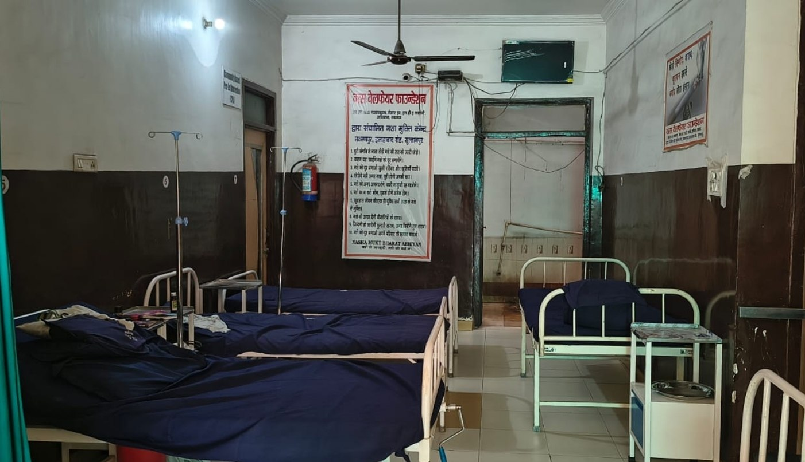
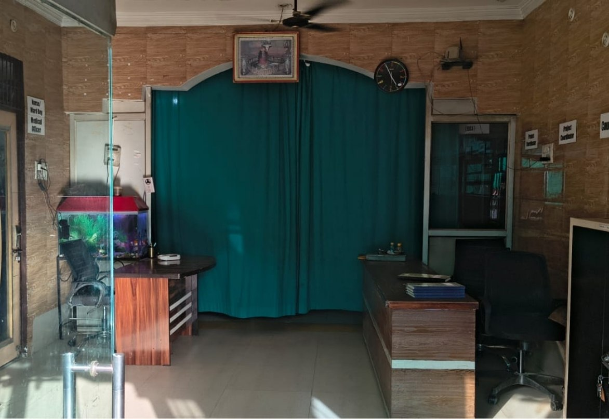
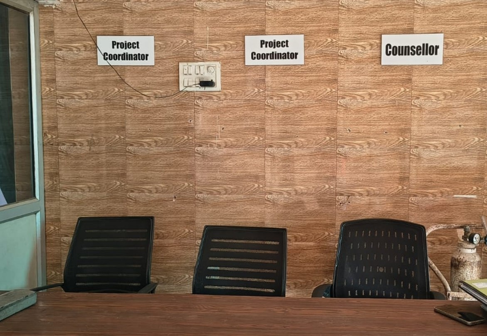
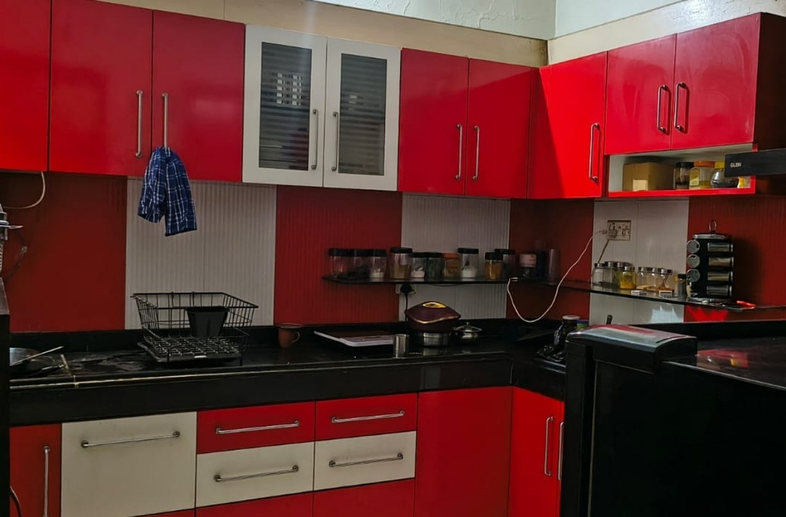
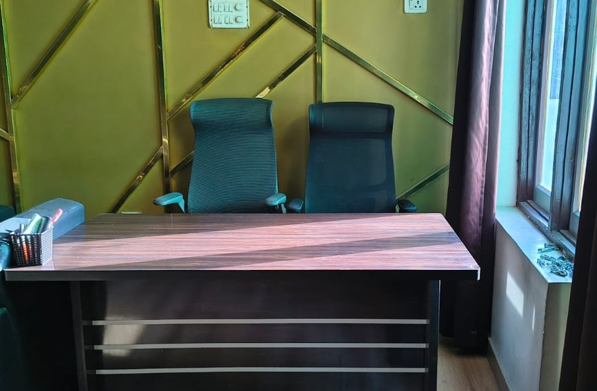
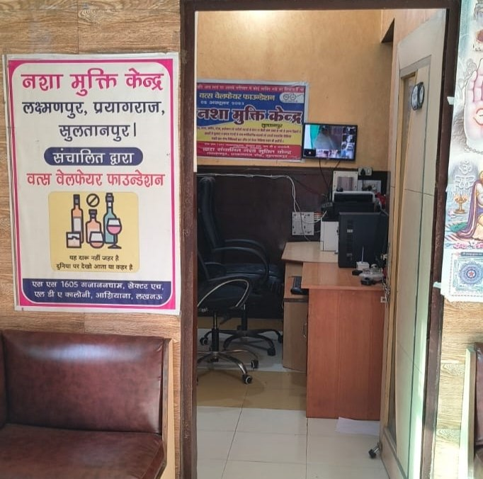

FACILITIES
Recovery ke liye clean, disciplined aur supportive environment.
Complete Rehabilitation Facilities
सम्पूर्ण पुनर्वास सुविधाएँ
Vats Welfare Foundation में मरीजों को एक सुरक्षित, अनुशासित और सकारात्मक वातावरण प्रदान किया जाता है जहाँ वे मानसिक, शारीरिक और सामाजिक रूप से नई शुरुआत कर सकें। हमारा उद्देश्य केवल नशा मुक्ति उपचार देना नहीं, बल्कि प्रत्येक व्यक्ति को आत्मविश्वास, सम्मान और बेहतर जीवन की ओर वापस ले जाना है।
आधुनिक सुविधाएँ, अनुभवी टीम, योग एवं परामर्श सेवाएँ, स्वच्छ वातावरण और 24×7 देखभाल के माध्यम से हम recovery process को अधिक comfortable और effective बनाते हैं।
Comfortable Rooms
शांत और स्वच्छ कमरे जहाँ मरीजों को सुरक्षित एवं आरामदायक वातावरण मिलता है।
Healthy Nutrition
पौष्टिक भोजन एवं नियमित diet support जिससे physical recovery बेहतर हो सके।
Medical Support
अनुभवी medical staff द्वारा नियमित health monitoring और देखभाल।
Yoga & Meditation
मानसिक शांति और सकारात्मक सोच के लिए योग एवं meditation sessions।
A Safe, Secure & Healing Environment





